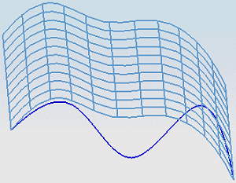
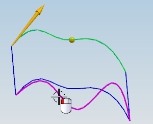
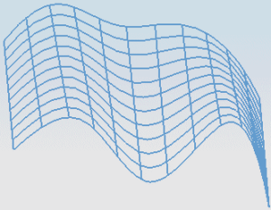

打开 ffm2_edit_parameters_2。

通过曲线组片体是使用曲面顶部和底部的线串来创建的。
右击图形窗口背景并选择渲染样式→着色，以更好地查看曲面的外形。
返回到静态线框。
在图形窗口中，双击片体。
您将移除底部的截面线串，并用曲面底部附近的另一条样条曲线来代替。
在截面组中，展开列表并选择列表中的截面 2。
截面 2线串被高亮显示。
要从特征中移除截面 2，按住 Shift 键并选择它。
为截面 2选择如图所示的新曲线。

如果新截面曲线的方向矢量与截面的方向不匹配，重新进行选择，选择时在要出现箭头的一端进行选择。
点击确定。
隐藏原曲线。

片体现在使用的是新曲线来定义的。
关闭所有部件。